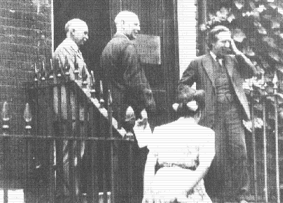
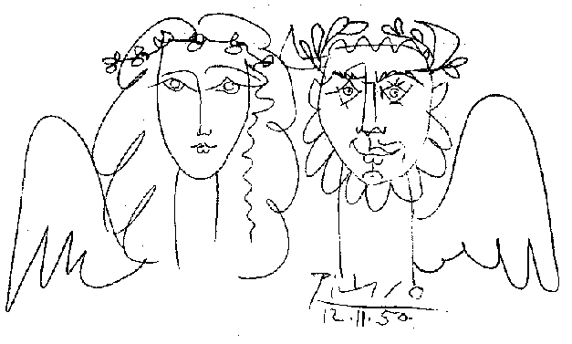

The Biomolecular Research Laboratory at Birkbeck College was opened on 1st July 1948 by the grand old man of British Crystallography, Sir Lawrence Bragg, OBE, MC, FRS. It was the brain-child of the then professor of Physics at Birkbeck, John Desmond Bernal.
 left to right: Bragg, Gordon Jackson. Anita Rimel(back to camera) and Bernal at the opening ceremony
A meeting to celebrate the 50th anniversary of this happy event was held on 26th November 1998 in the Clore building, Birkbeck College. The Master of the College, Professor T.O'Shea welcomed delegates before handing over to Julia Goodfellow to chair the opening session. The speakers were all associated with the College in some way and reminisced about 'old times' before going on to describe their current research. The organisers had thoughtfully provided us with a copy of the pamphlet printed on the occasion of the opening. Bernal wrote the introduction which begins:
"The setting up of the Birkbeck College Biomolecular Research laboratory was made possible by the generous gift of the Nuffield Foundation which enabled the College to equip and man the two houses in which the present research centre is lodged. The old research laboratory of the Physics Department, where work along these lines was carried out on a small scale before the war had been destroyed by enemy action and would in any case have been much too small for the scale of work at present in hand."
There were three main aims for the laboratory:
In 1999 it is hard to understand how people managed to determine crystal structures in 1948 without modern hardware and computers. (A description of early computers can be found in '50 years of Computing in Structural Chemistry and Molecular Biology', 'Crystallography News' Issue 66, page 16, September 1998). Sadly Andrew Booth who worked mainly on the hardware side was unable to attend but he sent a paper with his reminiscences. He reminded us that in the early 1940s it took a team of 2 or 3 people 3 years to determine a precision structure. Today that same refinement can be run in less than 0.1 second on a Intel based P2 running at 400 MHz.
Alan Mackay spoke on 'Prehistory', setting the scene by describing Bernal's work in Cambridge and the move to 21/22 Torrington Square, where he lived in a flat on the top floor enabling him to check up easily on the activities of his students in their offices on the lower floors. He also avoided wasting time in commuting. Jim Jeffery worked on the problem of why cement sets. This was a pressing industrial problem at the time when there was a lot of reconstruction work taking place some 3 years after the end of World War II. Bernal thought that "the properties of hydrated cements are are closely related to those of many biological gels and are strongly influenced by the same long range forces". The current industrial materials group still continues working on such applied problems.
John Finney spoke on his work on the structure of water, a common liquid
but little understood, which has led him to determine the structure of the
newly discovered phase (VII) of ice. Bernal was his PhD supervisor.
John recalled that when he came for the interview before being accepted as a
student Bernal showed him the structure seen in the adjacent photograph.
Bernal showed John the model and asked him to point out the order within it.
Poor John was confused by this, because he could not see any order, but he very much wanted to work on his Ph.D with Bernal so he finally plucked up his courage to say timidly to this eminent professor "I'm sorry professor, but I can't see any order". He got the studentship, and gained a life long interest in the behaviour of water and ice. He believes that understanding the forces between water molecules is essential to an understanding of the interface between water and proteins and to the dynamics of biological molecules.
Bob Stroud (a graduate student at Birkbeck between 1964 and 1968) also worked on interfaces, but those involved in membrane proteins. He discussed structures of the recognition particle which is responsible for targeting membrane and secreted proteins to the endoplasmic reticulum during their synthesis, as well as work on the transmembrane receptor erythropoietin.
The contrast between the primitive equipment used by Bernal's group and the facilities available to modern structural biologists was emphasised by Peter Lindley, who had worked with Bernal in the 1960s. He is now the director of the European Synchrotron Radiation Source (ESRF). Synchrotron sources produce the most powerful X-rays used in protein crystallography experiments, they cost an enormous amount, far more than can be afforded by any one European country.
The study of the structure and mechanism of muscle fibres goes back to the Middle Ages and beyond. Leonardo da Vinci first made the discovery that muscles can only contract: "Muscle doesn't push, it pulls". The basic theory - that when muscles contract, two sets of protein filaments slide across each other - has been known for many decades. However, it is only now that the structure of these proteins is known that we are beginning to understand the mechanism of this most basic of biological processes. Ken Holmes, at Birkbeck between 1955 and 1962, now at the Max Planck Institute for Medical Research in Heidelberg, described some elegant structures of complexes between the two muscle proteins actin and myosin.
Aaron Klug described some of his work in elucidating one way in which protein molecules bind to DNA. It is now possible to design a protein specifically to bind to a particular sequence of DNA bases, such as those which result from cancer-causing mutations.
Cyrus Chothia of the MRC Laboratory of Molecular Biology, Cambridge, and Andrej Sali of Rockefeller University, New York, described attempts to predict the structures of the protein products of all genes in microbial genomes. Although only a small fraction of protein sequences have known structure, it is possible to build models of very many more. Chothia showed predictions of partial structures for 41% of 467 proteins from the bacterium Mycoplasmia genitalium ; Sali presented models of the structures of 17% of over 6000 proteins from a yeast.
Laurence Pearl came to Birkbeck in 1978 as an MSc student working under Tom
Blundell. He described how DNA is chemically unstable and how we are now
beginning to understand the mechanism of DNA repair by nucleotide excision
resulting from a number of protein structures showing displacement of
damaged bases by protein loops.
Tom Blundell (who came to Birkbeck in
1976 and headed this laboratory from 1978 to 1996 ) gave industrial and
academic views of structural based drug discovery and design. During his
time in Birkbeck the structure of HIV protease was found. Inhibitors of
this enzyme, designed rationally using this structure, have contributed to
the increased life expectancy of AIDS patients in the Western world.
Bernal was a great scientist; at this symposium we heard of his intellectual legacy to biomolecular structure world in the thriving Birkbeck laboratory, but his interests were not limited to science; he was also interested in the Arts and in politics. He was a member of the Communist party and interested in the peace movement. Many eminent peace campaigners were entertained in his top floor flat above the laboratory, including Pablo Picasso who painted the mural shown below on the wall of Bernal's flat.

This mural, the only one ever executed by Picasso in England, was saved from demolition. The college is hoping to raise money for a joint project with the Institute of Contemporary Arts (ICA) which explores the interface between the Arts and the Sciences. The project will have 3 goals:
Clare Sansom and Kate Crennell
References:
 Click here to return to BCA homepage
Click here to return to BCA homepage